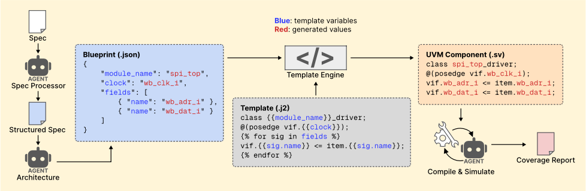
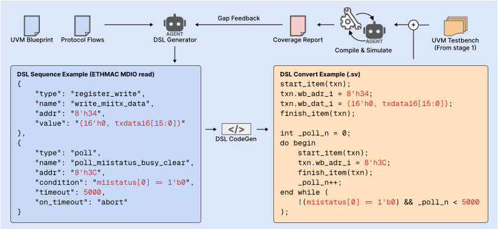

HAVEN：基于 LLM 的 UVM 测试平台合成混合自动化验证引擎（Hybrid Automated Verification ENgine）
IC 验证约占芯片开发周期的 70%，但 HDL 在 LLM 训练数据中极为稀缺，让 LLM 直接生成 SystemVerilog 测试平台极易出错。HAVEN 提出混合架构：禁止 LLM 直接写 HDL，只让 LLM Agent 做擅长的事——从设计规格提取结构化信息（JSON Blueprint）与分析 coverage gap 报告，所有代码生成交给协议特定 Jinja2 模板引擎与基于规则的 DSL CodeGen。流程分两阶段：Stage 1 用模板渲染全部 UVM 组件并生成六类预定义序列（无 LLM 参与）；Stage 2 由 LLM 迭代分析覆盖缺口、产出受 JSON schema 约束的 DSL 序列，再由规则 CodeGen 编译为协议正确的 UVM 序列。在 19 个开源 IP 设计上取得 100% 编译成功、90.6% 代码覆盖与 87.9% 功能覆盖，平均每设计仅 6 次 LLM 调用、$0.37 成本，且对 5 个开源模型基本可用。对团队的核心启示是'LLM 只做结构化提取与差距分析、代码生成交给确定性规则系统'这一 Agent 架构模式。
IC 验证消耗近 70% 的芯片开发周期，而 HDL（如 SystemVerilog）在 LLM 训练数据中极其稀缺，LLM 直接生成测试平台时频繁出现阻塞/非阻塞赋值混用、时钟边沿同步错误等问题；先前让 LLM 直接写整个测试平台并依赖迭代自我修正的方法（AutoBench、CorrectBench、ConfiBench 等）在时间与 token 上代价高昂且未必正确。论文要解决两个具体挑战：如何自动生成结构正确（可编译、总线握手时序正确）的 UVM 组件，以及如何生成达到高覆盖率的 UVM 序列，从而降低验证开销。
两阶段混合架构，核心原则是 LLM 永不直接写 SystemVerilog。Stage 1（测试平台生成）：LLM Agent（Spec Processor、Architecture）从设计规格提取结构化 JSON 工件（UVM Blueprint：agent 拓扑、seq_item 字段数据契约、总线协议类型、BFM 需求；Protocol Flows），规则引擎按字段角色与宽度推断激励策略，Template Engine 将 Blueprint 与预定义协议特定 Jinja2 模板（Wishbone master、AXI4-Lite master、Direct 接口）结合渲染全部 UVM 组件（driver、monitor、scoreboard、subscriber、七类外设 BFM），并通过 Protocol-Aware Sequence DSL（十种 step 类型）+ 共享规则 CodeGen 生成六类预定义序列（无 LLM 参与）；三层信号一致性检查过滤非法 Blueprint，compile-fix 循环（模板组件为受保护集合，LLM 只修 LLM 生成的部分，最多 5 次迭代）保证编译通过。Stage 2（序列优化）：将 URG 覆盖率输出解析为类型化记录并以纯文本列表呈现给 LLM，prompt 携带已有 DSL 序列避免重复，LLM 输出被约束为 JSON schema 的 DSL 文档；auto-fix pass 先静默修复常见 DSL 错误，规则 CodeGen（含非 rand 约束移除、字段校验、协议时序强制三重安全过滤）翻译为协议正确的 UVM 序列；序列只累积不替换，迭代反馈直到覆盖率改进低于 0.1pp（早停）或达到最大迭代数（评测中 K=3）。
19 个开源 IP 设计（180–11k LOC，覆盖 Direct/Wishbone/AXI4-Lite 三种协议）上实现 100% 编译成功，compile-fix 需 1–4 次迭代（平均 1.9 次）
平均代码覆盖率 90.6%、功能覆盖率 87.9%；Stage 1 预定义序列单独达 84.6% 代码 / 79.8% 功能覆盖，Stage 2 平均再 +6.0pp / +8.1pp
与最相关的 UVM 2 在相同 9 个设计上对比：代码覆盖 91.0% vs 87.44%（+3.6pp），功能覆盖 90.7% vs 89.58%（+1.1pp）
成本：平均每设计 6 次 LLM 调用、$0.37（GPT-5.2），19 个设计总计 $7.08；单设计 $0.19（Simple SPI）至 $0.62（CAN）；模板渲染本身零 LLM token
消融实验：禁用全部模板、让 LLM 生成所有 UVM 组件时，3 个测试设计（ALU、AES、SPI）无一产生可编译测试平台
模型无关性：5 个开源模型均可跑通完整流程，最强 Qwen3.5-27B 达 85.8% 代码 / 78.3% 功能覆盖（比 GPT-5.2 低 4.6pp / 7.4pp）；Qwen3.5-9B 在 19 个设计中 8 个无法产出可编译测试平台
DSL 紧凑性：前 5 种 step 类型覆盖 96.8% 的 LLM 输出步骤；3/19（15.8%）设计触及 DSL 表达力上限
Stage 2 最大增益来自低起点设计：DFI +47.6pp（41.6%→89.2%）、UART +24.3pp、UE SPI +16.2pp；大多数设计在 2–3 次迭代内收敛
据论文自述，HAVEN 是首个用预定义、协议特定 Jinja2 模板生成全部 UVM 组件，并用自研 Protocol-Aware DSL 与规则 CodeGen 生成 UVM 序列的系统。与先前工作区别：UVM 2 仅覆盖五个简单组件且不含协议信息，总线握手时序错误会导致整个验证失败；AutoBench/CorrectBench/ConfiBench 让 LLM 直接写整个测试平台并依赖昂贵的迭代自我修正。HAVEN 反其道而行——限制 LLM 只做结构化信息提取与覆盖差距分析，把所有代码生成委托给规则系统，同时保证 HDL 语法正确性、高覆盖与低成本；评测基准也是同类中最大最多样的（19 个设计 vs UVLLM 3 个、MEIC <150 LOC、AutoBench 系仅 HDLBits 片段）。
相关度级别：high
命中能力域：3.3 Agent 架构与工具使用 | 3.5 评测与可靠使用 | 3.1 上下文工程与记忆
理由：论文虽面向 IC 验证领域，但本质是'如何正确使用 LLM 做代码生成'的 Agent 架构问题，直接命中团队能力域。3.3：HAVEN 的 harness 设计是单 Agent 执行可靠性的典型实现——LLM 输出强制约束为 JSON schema/DSL、规则 CodeGen 兜底、compile-fix 循环中模板组件设为受保护集合、三重安全过滤与 auto-fix pass。3.5：论文系统评测了编译可靠性、代码/功能覆盖、token 成本（平均 6 次调用/$0.37）与跨 5 个模型的鲁棒性，并做了模板消融，是 AI 辅助工程实证研究与成本/可靠性评测方法的范本。3.1：将原始 EDA 工具输出解析为类型化纯文本记录、以结构化 JSON 工件组织上下文、prompt 携带历史序列避免重复生成，并实证指出上下文长度（16K 输出 token 限制）是开源模型的主要瓶颈之一，属于生产系统中的结构化上下文组织。'LLM 不直接写代码、只做结构化提取与差距分析'这一模式可平移到团队的代码生成与测试辅助 Agent。
建议动作：深入精读并做内部分享
arXiv:2604.27643v1 [cs.AR] 2026年4月30日
HAVEN：面向基于LLM的UVM测试平台综合的混合自动验证引擎
Chang-Chih Meng, Yu-Ren Lu, Guan-Yu Lin, Tsung Tai Yeh, Kai-Chiang Wu, I-Chen Wu
国立阳明交通大学，新竹，台湾
邮箱：{ mcc.cs11, yrlu.cs14, ericlin.cs13 } @nycu.edu.tw, { ttyeh, kcw, icwu } @cs.nycu.edu.tw
摘要 - 集成电路（IC）验证消耗了IC开发周期近70%的时间，近期研究已开始利用大型语言模型（LLM）自动生成测试平台，以降低验证开销。然而，我们发现LLM难以正确生成测试平台。与高级编程语言不同，硬件描述语言（HDL）在LLM训练数据中极为罕见，导致LLM生成不正确的代码。
为了克服使用LLM生成通用验证方法学（UVM）测试平台和序列时面临的挑战，我们提出了HAVEN（混合自动验证引擎），以阻止LLM直接编写HDL。对于UVM测试平台生成，HAVEN利用LLM Agent分析设计规范，以生成结构化的架构规划。随后，HAVEN模板引擎结合预定义和协议专用的模板，生成所有具有正确总线握手时序的UVM组件。对于UVM序列生成，HAVEN引入了协议感知序列领域特定语言（DSL），将序列分解为细粒度的步骤类型。一组预定义的DSL模式首先在无需LLM参与的情况下建立可实现高覆盖率的序列。HAVEN通过迭代利用LLM Agent分析覆盖率缺口报告并编写额外的针对性DSL序列，持续提高覆盖率。
与以往工作不同，HAVEN是首个利用预定义且协议专用的Jinja2模板，并通过我们提出的协议感知DSL和基于规则的代码生成器来生成所有UVM组件和UVM序列的系统。我们在涵盖三种接口协议（Direct、Wishbone、AXI4-Lite）的19个开源IP设计（180-11 k LOC）上的实验结果表明，HAVEN平均实现了100%的编译成功率、90.6%的代码覆盖率和87.9%的功能覆盖率，在LLM辅助测试平台生成系统中达到了SOTA（最先进水平）。
集成电路（IC）验证是确保IC芯片中各功能单元正确工作的关键过程，占据了IC开发周期近70%的时间 [1], [2]。传统上，验证工程师需要针对每个IC设计的协议和控制逻辑手动开发测试平台（testbench）和序列，从而带来大量的验证开销 [3]。为了减少这一开销，近期研究开始利用大语言模型（LLM）Agent自动生成测试平台 [4]-[12]。
然而，LLM难以生成正确的测试平台。与Python、JavaScript和C++等高级编程语言不同，硬件描述语言（HDL）在LLM的训练数据中极为罕见。例如，LLM很难区分阻塞赋值（=）与非阻塞赋值（<=），也难以正确使用时钟边沿同步。这些语法构造在高级语言中没有对应物，导致LLM频繁生成错误的代码 [13]-[16]。近期的一些方法，如AutoBench、CorrectBench和ConfiBench [17]-[21]，利用LLM直接编写完整的测试平台，并依赖迭代式自我纠错来修复错误。然而，这种迭代调试过程在时间和token消耗上代价高昂，且仍可能无法得到正确的结果。
随着IC设计复杂度的不断增长，手写单体式测试平台变得越来越难以维护和复用。通用验证方法学（UVM）[22]是一种基于SystemVerilog、被广泛采用的行业框架，它通过将测试平台分解为标准化、可复用的组件来解决这一问题，例如驱动器（driver）、监视器（monitor）、记分板（scoreboard）和订阅者（subscriber）。每个UVM组件都有明确定义的语法约定。在应用LLM自动化UVM测试平台生成时，会出现两个具体的挑战。
第一个挑战是生成结构性的UVM组件。我们观察到，这些组件遵循明确定义的格式。当被测器件（DUT）的配置发生改变时，只需更新测试平台模板中的端口列表和协议类型即可。这种基于模板的方法非常适合用于生成UVM测试平台。先前的工作UVM 2 [23]采用手工构建的模板来辅助LLM生成测试平台。然而，UVM 2的模板仅覆盖五个简单的UVM组件，且不包含协议信息。因此，当DUT包含带有时钟序列事件的总线协议时，在总线握手协议中误用阻塞赋值往往会导致整个验证过程失败。
其次，生成能够达到高覆盖率的 UVM 序列同样具有挑战性。UVM 序列定义了用于检验 DUT 功能单元的测试激励及其执行顺序。与结构性的 UVM 组件不同，序列源自设计规范，并因 DUT 而异，因为每个设计都有其自身的协议和控制流。先前的工作已应用强化学习和贝叶斯优化来搜索合适的测试激励 [24]-[28]。然而，DUT 可能包含复杂的控制流或多步总线协议。例如，一次 Wishbone 事务需要地址建立、strobe 置位和等待应答的协调序列。尽管探索空间显著增长，但实际能到达未覆盖状态的激励集合仍然很小。因此，这些方法难以高效收敛，导致 IC 验证覆盖率降低。

为了应对自动 UVM 测试平台生成中的这些挑战，我们提出了 HAVEN（Hybrid Automated Verification ENgine）1，它阻止 LLM Agent 直接编写 SystemVerilog 代码。相反，HAVEN 让 LLM 发挥其最擅长的作用——从设计规范中提取并组织信息——而将所有代码生成任务委托给基于规则的代码生成器（CodeGen），由其保证 SystemVerilog 的语法正确性。
为了生成正确的 UVM 组件，HAVEN 采用 LLM Agent 来分析设计规范并产出 UVM 架构规划（architectural plan）：一种结构化的 JSON 文档，用于捕获测试平台结构（Agent 拓扑、组件连接关系、接口协议类型）以及信号级数据契约。随后，模板引擎（Template Engine）将该架构规划与预定义的、协议特定的 Jinja2 模板相结合，生成所有 UVM 组件，包括具有正确总线握手时序的驱动器（driver）（第 III 节）。由于模板中编码了协议正确的编码约定，该方法在使用 LLM 为测试平台生成 UVM 组件时消除了 SystemVerilog 语法错误。
为了准确生成 UVM 序列并优化覆盖率，HAVEN 引入了一种协议感知的序列领域特定语言（DSL），将序列分解为细粒度的步骤类型（例如寄存器写入、轮询、值扫描）。基于规则的 CodeGen 将每个 DSL 步骤翻译为协议正确的 UVM 序列代码，从而确保 SystemVerilog 的语法正确性（第 II 节）。HAVEN 分两个阶段使用该 DSL。首先，一组预定义的 DSL 序列模式——例如约束随机、字段值扫描、翻转模式和 FIFO 压力测试——由信号特征和协议结构触发，无需任何 LLM 参与。仅这些预定义序列便已达到足够的覆盖率。其次，为了最小化剩余的覆盖缺口，HAVEN
1 HAVEN 将在论文发表后以开源形式发布；其完整实现（包括所有协议模板和 DSL CodeGen）将公开提供。
采用 LLM Agent 来分析覆盖率缺口报告，并编写额外的、有针对性的 DSL 序列（第 IV 节）。该过程可以迭代进行：每次仿真之后，HAVEN 会将更新后的覆盖率缺口反馈给 LLM，由 LLM 生成针对未覆盖行为的新 DSL 序列，直到覆盖率收敛或达到最大迭代次数。
我们在涵盖三种接口协议的 19 个开源 IP 设计上对 HAVEN 进行了评估（第 V-A 节）。实验结果表明了 HAVEN 在 LLM 辅助测试平台生成方面的优越性，具体取得了以下成果：
这些最先进（SOTA）结果背后的关键洞察在于：LLM 不应直接编写 HDL 测试平台。LLM 擅长理解设计规范、提取结构化信息以及解读覆盖率缺口，但难以应对 HDL 代码的语法和时序约定。通过将 LLM 限制于结构化信息提取，并将所有代码生成工作委托给基于规则的系统，HAVEN 以较低的成本同时实现了 HDL 语法正确性和高覆盖率。
HAVEN 流水线包含两个阶段：阶段 1 生成所有 UVM 组件，包括预定义序列；
阶段 2 通过 LLM 驱动的领域特定语言（DSL）序列生成来迭代提升覆盖率。
在阶段 1（第 III 节）中，目标是生成一个完整、可通过编译且带有预定义序列的 UVM 测试平台。为此，LLM Agent 从设计规范中提取结构与协议信息，形成两个结构化的 JSON 工件：UVM 蓝图（UVM Blueprint）和协议流程（Protocol Flows）。随后，模板引擎（Template Engine）将这些工件与预定义的协议专用模板相结合，生成所有 UVM 组件，包括具有正确总线握手时序的驱动器（driver）、外设总线功能模型（BFM）以及功能覆盖率订阅器（subscriber）；图 1 以驱动器路径为例具体展示了这一过程。阶段 1 还通过基于规则的策略推断生成预定义序列，全程不涉及 LLM。一个编译修复循环（compile-fix loop）确保测试平台在进入阶段 2 之前能够正确编译。
在阶段 2（第 IV 节）中，目标是填补预定义序列无法触及的剩余覆盖率缺口。为此，LLM 分析阶段 1 仿真所产生的覆盖率缺口报告，并以结构化的 DSL JSON 格式表达针对性的序列（图 2）。基于规则的 DSL 代码生成器（CodeGen）将这些 JSON 翻译为协议正确的 UVM 序列，这些序列与阶段 1 的预定义序列累积在一起。HAVEN 可以在每次仿真之后对阶段 2 进行迭代：更新后的覆盖率缺口报告被反馈给 LLM，由 LLM 生成更多针对未覆盖行为的 DSL 序列，直到覆盖率收敛或达到最大迭代次数。
协议感知序列 DSL（Protocol-Aware Sequence DSL）
两个阶段均通过同一个协议感知序列 DSL 来生成序列。该 DSL 定义了十种步骤类型，覆盖了验证操作的主要空间（表 I），例如寄存器写入、轮询循环、数值扫描以及 BFM 动作。要生成 UVM 序列，需将 DSL 源（无论是阶段 1 中由基于规则的推断生成，还是阶段 2 中由 LLM 生成）表示为由这些步骤类型构成的 JSON 文档。随后，一个共享的基于规则 CodeGen 将该 JSON 翻译为协议正确的 SystemVerilog [29], [30]。这一设计确保 LLM 从不直接编写 SystemVerilog；它只负责选择步骤类型并填入参数（地址、值、条件），而语法与协议的正确性则由 CodeGen 来保证。图 2 通过一个具体示例展示了这一翻译过程：一次 ETHMAC MDIO 寄存器读取被表达为两个 DSL 步骤（register_write 和 poll），以及由 CodeGen 生成的协议正确的 UVM 序列代码。翻译机制将在第 IV 节中详细介绍。
阶段 1 以设计规格为输入，生成一个可通过编译、带有预定义序列的 UVM 测试平台。测试平台的生成本身并不需要 DUT 的 HDL 源代码；只有在针对 DUT 对测试平台进行编译和仿真时才需要该源代码。图 1 以一个完整的 SPI 示例展示了该流水线的 driver 路径：Spec Processor 和 Architecture 智能体提取出 Blueprint，Template Engine 从 Jinja2 模板渲染出相应的 UVM driver，而 Compile & Simulate 智能体则生成覆盖率报告。完整流水线通过四个步骤推进：LLM 将结构信息提取为 JSON Blueprint，基于规则的引擎推断激励策略，Template Engine 渲染所有 UVM 组件与预定义序列，最后由编译-修复（compile-fix）循环确保正确性。
| Step Type | Description |
|---|---|
| register_write register_read poll randomize_send delay memory_write bfm_action config_sweep value_sweep toggle_pattern | Write value to register address Read register, store result Repeated read until condition met CRV transaction with inline constraints Wait N clock cycles Bulk transfer via BFM backdoor Trigger predefined BFM task Cartesian product over register fields Iterate field through value list Systematic bit-toggle sequences |
| Step Type | Description |
在生成任何代码之前，LLM 首先从设计规格中提取关键信息，并将其组织成一个名为 UVM Blueprint 的结构化 JSON 文档。Blueprint 包含 agent 拓扑结构、seq_item 字段数据契约（类型、位宽、方向、角色）、总线协议类型以及总线功能模型（BFM）需求。流水线过滤器会自动将非激励信号（时钟、复位、pad、总线握手）从 seq_item 字段中排除。
有了 Blueprint 之后，HAVEN 必须决定如何激励每个信号。基于 Blueprint 中记录的每个 seq_item 字段的角色与位宽，一个基于规则的引擎无需 LLM 的进一步参与即可推断出激励策略。位宽 w ≤ 4 bit 的字段采用 enumerate 策略，并遍历所有 2^w 个取值；更宽的字段则采用约束随机验证（Constrained Random Verification, CRV）策略；具有显式默认值的 config 字段被固定为 fixed（non-rand）。
在 Blueprint 与激励策略确定之后，本步骤生成所有 UVM 组件与预定义序列。模板引擎（Template Engine）从由 Blueprint 参数化的预定义 Jinja2 模板中渲染出所有 UVM 组件（图 1）。协议专用的 driver 模板覆盖三种总线协议：Wishbone master、AXI4-Lite master 以及 Direct 接口（具有 ready/done/busy 握手变体）。图 3 将典型的 LLM 生成的 Wishbone driver（含阻塞赋值、信号名不匹配以及无界等待）与模板生成的版本进行对比，后者通过从 Blueprint 填充 Jinja2 变量（ {{ ... }} ）来生成协议正确的代码。
Stage 1 还通过 DSL CodeGen（第 II 节）生成六种类型的预定义序列，这一过程无需 LLM 参与（表 II）。基于规则的策略推断（第 III-B 节）为每种序列类型生成 DSL JSON，随后由共享的 CodeGen 将其转换为协议正确的

vif.cyc = 1; 阻塞赋值 (=) vif.stb = 1; 应为 <= vif.adr = item.adr; vif.dat_o = item.dat; 名称错误 @(posedge vif.clk); wait(vif.ack); 无超时 vif.cyc = 0; vif.stb = 0;
vif.cyc_o <= 1'b1; 非阻塞 vif.stb_o <= 1'b1; 来自 Blueprint vif.adr_o <= item.adr_o; 名称精确 vif.dat_o <= item.dat_o; begin : ack_wait 有界超时 while (ack_i !== 1'b1 && cnt < 500) end
SystemVerilog。在此翻译过程中应用了三个安全过滤器：非 rand 约束移除（对输出字段的约束被静默丢弃）、字段验证（对不存在信号的引用会被拒绝）以及协议时序强制执行（总线握手不变量由 driver 模板而非序列保证）。在添加任何 LLM 生成的序列之前，这些预定义序列在 19 个 IP 设计上达到了 84.6% 的平均代码覆盖率和 79.8% 的平均功能覆盖率。
外设总线功能模型（BFM）生成。许多 DUT 无法独立运行：以太网 MAC 需要 MII PHY 模型，SPI 主设备需要从设备，而存储器控制器需要能够响应总线事务的 SDRAM 模型。HAVEN 通过添加一个 BFM 声明来扩展 Blueprint，从而生成这些外设模型，该声明捕获外设类型及其与 DUT 的连接。Template Engine 从包含七种外设类型的库（GPIO、I 2 C 从设备、MII PHY、SDRAM 模型、SPI 从设备、UART 串行和 Wishbone 从设备）中渲染出相应的 BFM，顶层 testbench 模板则自动将 BFM 连接到 DUT。由于 BFM 是由模板生成的，它们无需任何 LLM 编写的 SystemVerilog 即可编码协议正确的响应时序。
| Seq. | Description | Trigger |
|---|---|---|
| CRV | Random writes, reads, mixed | Always |
| Enum | Sweep 2 w values ( w ≤ 4 ) | Small fields |
| Toggle | Walking-1/0, alternating | Bus/reg detected |
| FIFO | Fill, drain, overflow, push/pop | TX/RX reg detected |
| Bank | Multi-bank seq./interleaved | Bank addr detected |
| BFM | Protocol-specific actions | BFM config present |
| Seq. | Description | Trigger |
功能覆盖率生成。阶段 1 还为每个 agent 生成功能覆盖率。subscriber 模板为每个 seq_item 字段生成一个 covergroup，其 bin 派生自 Blueprint 的 cover_bins 声明（语义范围或基于位宽的自动分箱）。三层信号一致性检查确保 RTL 接口、事务接口和 monitor 映射在信号名称与位宽上全部一致；未通过该检查的 Blueprint 会在代码生成之前被拒绝，从而消除虚假 coverpoint。
在进入 Stage 2 之前，生成的测试平台必须能够正确编译和仿真。模板生成的 UVM 组件构成一个受保护集合，编译-修复循环绝不会修改这些组件。当编译失败时，LLM 会读取 VCS 错误日志并修正 LLM 生成的 sequence item；修复按依赖顺序解决，最多进行五次迭代。测试平台编译通过后，HAVEN 运行一次仿真以生成初始覆盖率报告，该报告作为 Stage 2 迭代优化的起点。
尽管 Stage 1 的预定义序列仅凭自身便已达到 84.6% 的平均代码覆盖率和 79.8% 的平均功能覆盖率，但包含复杂协议或深层状态机的 IC 设计仍需要更具针对性的激励来提升其覆盖率，而这类激励是基于规则的生成所无法产生的 [31], [32]。Stage 2 通过一个三步流程（图 2）来弥补这一差距，该流程执行 K 次迭代，每次迭代都会将最新的覆盖率缺口报告反馈给 LLM；我们在整个评估中均报告 K =3。
DSL 序列生成的目标是识别尚未被覆盖的内容，并编写有针对性的 DSL 序列来激励这些路径。LLM 接收设计规范中的协议流程、UVM Blueprint，以及来自 Stage 1 仿真的覆盖率缺口报告。这些覆盖率缺口从 URG 输出中被解析为类型化记录（行命中、翻转方向、有限状态机（FSM）状态/转换缺失、分支条件以及功能覆盖率仓），并以纯文本列表的形式呈现，使 LLM 无需处理 EDA 工具的原始格式即可对其进行处理。提示词中还包含先前迭代中已有的 DSL 序列，以便 LLM 能够参考已经测试过的内容并避免生成重复序列。LLM 的输出被约束为 JSON schema，从而确保每个响应都是有效的 DSL 文档；即使 LLM 尝试，也无法生成自由格式的 SystemVerilog。
为了说明这一点，以 CAN 的 Stage 2 为例。覆盖率报告将覆盖点 FP_002（传输状态）列为未覆盖。LLM 将其追溯到一个缺失的 TX 缓冲区写入以及随后的状态寄存器检查，并生成一个 transmit_frame_via_tx_buffer 序列：一个用于加载 TX 缓冲区的 register_write，随后对状态寄存器位 3 进行轮询以确认完成。整个输出均为 DSL JSON；LLM 不编写任何 SystemVerilog。
一旦 LLM 生成了 DSL JSON，就必须将其转换为协议正确的 UVM 序列代码。在代码生成之前，一个自动修复（auto-fix）步骤会静默地修复 DSL JSON 中常见的 LLM 错误，而不是将其拒绝，从而避免了额外的一次 LLM 往返。
随后，共享的 CodeGen 将每个经过验证的 DSL 步骤转换为协议正确的 UVM 代码（图 2）。对于 register_write，它将该操作封装在 start_item / finish_item 中，通过查找 Blueprint 的信号名称（例如 wb_adr_i、wb_dat_i）将地址和值映射到正确的 seq_item 字段，并从驱动模板继承总线握手时序。对于 poll
task body( ); bus.write(8'h38, 32'h1); API 错误 while (bus.read(8'h3C) & 1) @(posedge clk); 无超时 data = bus.read(8'h34); 无 UVM 事务 endtask
步骤 1：LLM 输出 JSON 格式的 DSL "type": "register_write" "addr": "8'h38" "value": "32'h1" "type": "poll", "addr": "8'h3C" "condition": "miistatus[0]=0", "timeout": 20000 "type": "register_read", "addr": "8'h34", "store": "rxdata"
步骤 2：基于规则的 CodeGen 生成 UVM 序列 start_item(txn); txn.wb_adr_i = 8'h38; 来自 Blueprint txn.wb_we_i = 1'b1; finish_item(txn); 规范的 UVM txn // poll：有界的 20k 周期 // read：正确的字段名称
步骤，CodeGen 会生成一个有界的 do-while 循环，不断读取目标寄存器，直至满足指定条件或达到超时计数，从而防止了 LLM 生成的代码经常产生的无界等待。由于 CodeGen 在信号名称上始终参考 Blueprint，在协议时序上始终参考驱动模板，因此每一个被翻译的步骤都能保证与测试平台的其余部分保持一致。对这 19 个设计进行的 DSL 步骤类型分析表明，前五种类型覆盖了所有 LLM 输出步骤的 96.8%，证实了 DSL 的紧凑性；19 个设计中有 3 个（15.8%）触及了 DSL 表达能力的上限，需要超出当前线性 DSL 的控制流原语。图 4 对比了 DSL 生成与直接 LLM 生成。
IV-A 和 IVB 节所述的生成-仿真循环可以运行多次。我们观察到，每增加一次迭代都能持续提升覆盖率，这是因为更新后的差距报告为 LLM 提供了越来越聚焦的目标。
生成的 UVM 序列与阶段 1 的预定义序列累积在一起并共同仿真；新序列从不替换已有序列。这种累积式设计是有意为之：预定义序列已经覆盖了基本的激励空间（CRV、枚举、翻转），而每次迭代都在此基础上增加增量覆盖。替换较早的序列将面临丢失已覆盖状态的风险。
| Design | LOC | Benchmark Ports Sec. I/F | Benchmark Ports Sec. I/F | Code Cov. Stage 1 | (%) +Stage 2 | Func. Cov. (%) Stage 1 +Stage 2 | Func. Cov. (%) Stage 1 +Stage 2 | UVM 2 code/func | Calls | Token Cost In Out USD | Token Cost In Out USD | Token Cost In Out USD |
|---|---|---|---|---|---|---|---|---|---|---|---|---|
| Direct Interface | Direct Interface | Direct Interface | Direct Interface | Direct Interface | Direct Interface | Direct Interface | Direct Interface | Direct Interface | Direct Interface | Direct Interface | Direct Interface | Direct Interface |
| ALU | 482 | 9 | Handshake | 86.8 | 96.7 | 55.6 | 72.2 | ✓ | 6 | 41,384 | 18,610 | $0.33 |
| AES | 586 | 11 | Handshake | 96.6 | 96.6 | 78.6 | 92.9 | ✓ | 6 | 39,493 | 23,010 | $0.39 |
| SHA3 | 499 | 7 | Streaming | 94.8 | 94.8 | 68.3 | 78.3 | ✓ | 7 | 37,671 | 17,661 | $0.31 |
| SM4 | 420 | 5 | Handshake | 97.3 | 97.3 | 100.0 | 100.0 | ✓ | 6 | 30,949 | 10,861 | $0.21 |
| HUF | 1,572 | 8 | Streaming | 76.4 | 76.5 | 80.0 | 80.0 | ✓ | 7 | 34,695 | 13,980 | $0.26 |
| DFI | 1,231 | 32 | DDR3 PHY | 41.6 | 89.2 | 62.6 | 96.7 | ✓ | 8 | 53,769 | 29,103 | $0.50 |
| Avg | - | - | - | 82.3 | 91.9 | 74.2 | 86.7 | - | 7 | 39,660 | 18,871 | $0.33 |
| Wishbone Bus | Wishbone Bus | Wishbone Bus | Wishbone Bus | Wishbone Bus | Wishbone Bus | Wishbone Bus | Wishbone Bus | Wishbone Bus | Wishbone Bus | Wishbone Bus | Wishbone Bus | Wishbone Bus |
| SPI | 352 | 13 | SPI | 94.2 | 95.3 | 100.0 | 100.0 | ✓ | 6 | 49,648 | 19,377 | $0.36 |
| Simple SPI | 457 | 13 | SPI | 92.1 | 92.1 | 90.0 | 93.8 | - | 4 | 24,086 | 10,653 | $0.19 |
| UART | 683 | 18 | Serial | 64.6 | 88.9 | 100.0 | 100.0 | ✓ | 7 | 55,977 | 26,164 | $0.46 |
| I2C | 1,281 | 17 | I2C | 75.5 | 75.5 | 100.0 | 100.0 | - | 4 | 27,079 | 14,776 | $0.25 |
| GPIO | 1,462 | 17 | GPIO | 94.9 | 94.9 | 80.0 | 83.3 | - | 7 | 43,021 | 17,798 | $0.32 |
| CAN | 6,593 | 24 | CAN | 81.9 | 83.4 | 81.5 | 81.6 | - | 8 | 83,864 | 33,455 | $0.62 |
| ETHMAC | 11,154 | 40 | MII | 72.8 | 81.8 | 77.1 | 77.1 | - | 11 | 69,934 | 26,956 | $0.50 |
| SDRAM | 3,929 | 36 | SDRAM PHY | 81.4 | 84.0 | 54.9 | 96.4 | ✓ | 6 | 66,219 | 32,208 | $0.57 |
| Avg | - | - | - | 82.2 | 87.0 | 85.4 | 91.5 | - | 7 | 52,479 | 22,673 | $0.41 |
| AXI4-Lite | AXI4-Lite | AXI4-Lite | AXI4-Lite | AXI4-Lite | AXI4-Lite | AXI4-Lite | AXI4-Lite | AXI4-Lite | AXI4-Lite | AXI4-Lite | AXI4-Lite | AXI4-Lite |
| AXIL RAM | 180 | 21 | Memory | 92.1 | 92.1 | 67.2 | 80.6 | - | 6 | 40,052 | 25,297 | $0.42 |
| UE GPIO | 686 | 23 | GPIO | 98.0 | 98.0 | 90.0 | 92.9 | - | 7 | 55,203 | 20,511 | $0.38 |
| UE SPI | 1,156 | 33 | SPI | 78.0 | 94.2 | 79.6 | 79.6 | - | 7 | 57,713 | 28,746 | $0.50 |
| UE Timer | 542 | 20 | Timer | 96.2 | 97.9 | 81.1 | 94.4 | - | 6 | 31,349 | 11,924 | $0.22 |
| UE UART | 752 | 22 | Serial | 92.7 | 92.7 | 70.6 | 70.6 | - | 4 | 29,617 | 15,042 | $0.26 |
| Avg | - | - | - | 91.4 | 95.0 | 77.7 | 83.6 | - | 6 | 42,787 | 20,304 | $0.36 |
| Overall (19) | - | - | - | 84.6 | 90.6 | 79.8 | 87.9 | - | 6 | 45,880 | 20,849 | $0.37 |
| Avg (9) | - | - | - | - | 91.0 | - | 90.7 | 87.44 / 89.58 † | - | - | - | - |
| Design | LOC | Benchmark Ports Sec. I/F | Benchmark Ports Sec. I/F | Code Cov. Stage 1 | (%) +Stage 2 | Func. Cov. (%) Stage 1 +Stage 2 | Func. Cov. (%) Stage 1 +Stage 2 | UVM 2 code/func | Calls | Token Cost In Out USD | Token Cost In Out USD | Token Cost In Out USD |
阶段 1 中同样的编译-修复循环确保累积的测试平台在每次仿真前都能正确编译。每次仿真后，系统重新解析更新后的覆盖率差距报告，并将剩余差距反馈给 LLM [33], [34]，由其生成针对未覆盖行为的额外 DSL 序列。该循环在两种条件下终止：要么相邻两次迭代之间的覆盖率提升低于 0.1 个百分点（提前停止），要么达到最大迭代次数。在实际运行中，大多数设计在 2-3 次迭代内收敛。每个设计的覆盖率结果将在第 VI 节中报告。
我们从三个维度对 HAVEN 进行评估：(1) 编译可靠性（生成的测试平台是否总能成功编译？）；(2) 有效覆盖率（它能达到多少代码覆盖率和功能覆盖率？）；(3) 与先前工作的比较（与 UVM 2 及其他基于 LLM 的方法相比，其表现如何？）。
我们在 19 个开源 IP 设计上对 HAVEN 进行评估，这些设计按三种总线协议（Direct、Wishbone 和 AXI4-Lite）分组；其中九个设计（ALU、AES、SHA3、SM4、HUF、DFI、SPI、UART、SDRAM）与 UVM 2 基准测试（benchmark）[23] 重叠。每个设计的规模、端口数量和二级接口与覆盖率结果一并列于表 III 中。三个直接接口设计使用握手或流式 I/O；八个 Wishbone 设计增加了标准化总线以及外设特定的二级接口；五个来自 Ultra-Embedded 集合的 AXI4-Lite 设计则用于演练第三种协议模板。设计复杂度从 180 到 11 k LOC（代码行数）不等，与现有 benchmark [35], [36] 的规模相当甚至更大。Wishbone 组有意包含两个 SPI 控制器（OpenCores SPI 和 Simple SPI）以及两个 GPIO 控制器（OpenCores GPIO 和 UE GPIO），以检验同一驱动模板能否在不同复杂度的设计之间泛化。这些设计来源于 OpenCores 2、Ultra-Embedded 3、verilog-axi 4，以及四个自定义设计（ALU、AES、SPI、UART）。
2 https://github.com/fabriziotappero/ip-cores
3 https://github.com/ultraembedded/core soc
4 https://github.com/alexforencich/verilog-axi
对于每个设计，我们报告单次流水线执行（先 Stage 1 后 Stage 2）的结果，且不进行针对单个设计的调优或人工干预。
代码覆盖率。URG 的行、条件、翻转、分支以及 FSM 状态/跳转指标的未加权平均值，不包括 group 指标。
功能覆盖率。URG 的 group 指标，针对 HAVEN 的 subscriber 模板所生成的 covergroup 进行度量。每个字段的 covergroup bin 派生自 Blueprint 的 cover_bins 声明（第 III 节），因此 HAVEN 无需任何手写的黄金 covergroup，即可同时完成功能覆盖率目标的定义与度量。代码覆盖率由 VCS 针对 RTL 源代码进行度量，提供了一种不受 covergroup 设计影响的独立且客观的指标。
编译成功。若 VCS 在编译修复循环（compile-fix loop）之后能够无错误地生成仿真二进制文件，则该设计计为编译成功。
大语言模型（LLM）。所有流水线阶段均使用 OpenAI GPT-5.2。未应用任何微调或领域特定训练。
EDA 工具。使用 Synopsys VCS 2024.09-SP2 进行编译、仿真以及 URG 覆盖率分析。
HAVEN 在全部 19 个 IP 设计上实现了 100% 的编译成功率。模板加修复（template-plus-fixup）循环在每次运行中都能生成可通过 VCS 编译的验证平台，需要 1-4 次修复迭代（平均 1.9 次）。
为确认模板生成的 UVM 组件是必不可少的，我们开展了一项消融实验（ablation study），其中禁用所有模板，由 LLM 生成每一个 UVM 组件。三个受测设计（ALU、AES、SPI）无一能生成可编译的验证平台：LLM 生成的 driver 中存在阻塞/非阻塞赋值误用，scoreboard 引用了未定义的信号，monitor 则在错误的时钟边沿上采样。这证实了模板生成的 UVM 组件对编译成功起着关键支撑作用。
表 III 展示了 HAVEN 在全部 19 个 IP 设计上于两个流水线阶段的代码覆盖率与功能覆盖率：Stage 1（验证平台 + 预定义序列）和 +Stage 2（经过 K = 3 次针对性 DSL 序列生成迭代之后）。功能覆盖率从 Stage 1 生成的 subscriber covergroup 中度量，以 Blueprint 的 cover_bins 声明为参数，并通过第 III 节所述的三层信号一致性检查加以验证。
Stage 1 的模板驱动验证平台配合预定义序列，本身即可达到 84.6% 的平均代码覆盖率和 79.8% 的平均功能覆盖率。Stage 2 的针对性 DSL 序列平均再带来 +6.0 pp 的代码覆盖率提升和 +8.1 pp 的功能覆盖率提升，使最终平均值分别达到 90.6% 和 87.9%。
代码覆盖率提升最大的，是那些在 Stage 1 之后改进空间最大的设计：DFI 获得 +47.6 pp 的提升（从 41.6% 到 89.2%），因为 LLM 构造了 DDR3 专用的初始化序列，而其多阶段的 DDR3 PHY 初始化协议超出了预定义序列模式的范围；UART 获得 +24.3 pp 的提升，UE SPI 获得 +16.2 pp 的提升。在 Stage 2 未获得提升的设计，要么仅凭预定义序列就已达到较高覆盖率，要么需要协议级的状态设置，而寄存器级 DSL 激励难以触及这些状态（例如 I2C、HUF）。各设计的细分数据见表 III；各协议的平均值证实，该框架无需任何架构改动即可泛化应用于全部三种总线协议。
表 V 将 HAVEN 与最相关的基于 LLM 的测试平台生成系统 [6]、[7]、[17]-[19]、[23] 进行了比较。
在上述系统中，只有 HAVEN 对每个 UVM 组件槽位进行了模板化，并使用结构化 DSL 进行序列生成，而不是自由格式的 LLM SystemVerilog 输出。HAVEN 还在规模最大、最多样化的基准测试（benchmark）上进行评估：包含 19 个 IP 设计，代码行数（LOC）从 180 到 11 k，横跨三种总线协议；而 UVLLM（3 个设计）、MEIC（每个设计 < 150 LOC）以及 AutoBench/CorrectBench/ConfiBench（HDLBits 代码片段）仅限于小规模目标，且没有标准化的总线协议评估。
UVM 2 [23] 是与 HAVEN 关系最密切的系统，其在九个设计上报告了 87.44% 的平均代码覆盖率和 89.58% 的平均功能覆盖率。在这相同的九个设计上，HAVEN 实现了 91.0% 的代码覆盖率和 90.7% 的功能覆盖率，代码覆盖率提升了 3.6 pp，功能覆盖率提升了 1.1 pp。
表 III 最右侧的几列报告了在 GPT-5.2（每 1M 输入 token 1.75 美元，每 1M 输出 token 14 美元）上运行 Stage 1 + Stage 2 组合流水线时，每个设计的 LLM 调用次数和 API 成本。在全部 19 个 IP 设计上，HAVEN 平均每个完整测试平台需要 6 次 LLM 调用、花费 0.37 美元，总计 7.08 美元。单个设计的成本介于 0.19 美元（Simple SPI）与 0.62 美元（CAN）之间，这反映了设计规格规模以及所需编译修复（compile-fix）和 DSL 细化迭代次数的差异。模板渲染本身是免费的：它负责生成所有 UVM 组件，且不消耗任何 LLM token。
由于 HAVEN 将 LLM 限制为仅执行结构化信息抽取，该框架不应依赖于特定模型。为验证这一点，我们使用五个开源模型重新运行了该流水线（表 IV）。最强的开源模型 Qwen3.5-27B 达到了 85.8% 的代码覆盖率和 78.3% 的功能覆盖率，分别比 GPT-5.2 低 4.6 pp 和 7.4 pp；其余开源模型的代码覆盖率落在 79.9-87.3% 之间，差距集中在那些将 LLM 输出预算推向极限或需要大量协议推理的设计上。两个瓶颈占主导地位：上下文长度和模型容量。上下文长度 平均值基于 19 个 IP 设计；token 用量为 Stage 1 + Stage 2 LLM 调用的每设计平均值。∗ 开源模型通过 vLLM 自托管于 NVIDIA RTX PRO 6000（96 GB）上，不产生任何 API 费用。† 两个 gpt-oss 模型均在 ETHMAC 上失败（16 K 输出 token 上限）；gpt-oss-120b 还在 SM4 上失败。§ Qwen3.5-35B-A3B 在 DFI 上失败。‡ Qwen3.5-9B 在 19 个 IP 设计中的 8 个上无法生成可编译的测试平台；其平均值基于其余 11 个设计计算。¶ Qwen3.5 的 token 指标系实验中途加入；Qwen3.5-27B 的 token 平均值基于 13 个设计（ALU、CAN 和 UE GPIO 的运行早于统计启动），Qwen3.5-9B 的 token 平均值基于既成功编译又被纳入统计的 10 个设计。失败的设计被排除在各模型的平均值之外。
| Model | Type | Params (active) | Done | Code | Func. | Calls | Input | Output | Cost |
|---|---|---|---|---|---|---|---|---|---|
| GPT-5.2 | closed, API | - | 19/19 | 90.6 | 87.9 | 6 | 45.9 k | 20.8 k | $0.37 |
| Qwen3.5-27B ¶ | open, dense | 27B | 19/19 | 85.8 | 78.3 | 6 | 33.9 k | 17.5 k | free ∗ |
| Qwen3.5-35B-A3B § | open, MoE | 35B (3B) | 18/19 | 80.8 | 63.9 | 7 | 32.0 k | 17.5 k | free ∗ |
| gpt-oss-20b † | open, MoE | 21B (3.6B) | 18/19 | 79.9 | 73.2 | 5 | 30.4 k | 30.2 k | free ∗ |
| gpt-oss-120b † | open, MoE | 117B (5.1B) | 17/19 | 81.1 | 68.2 | 4 | 25.7 k | 16.7 k | free ∗ |
| Qwen3.5-9B ‡¶ | open, dense | 9B | 11/19 | 87.3 | 74.8 | 6 | 34.3 k | 19.2 k | free ∗ |
| Model | Type | Params (active) | Done | Code | Func. | Calls | Input | Output | Cost |
| HAVEN | UVM 2 | UVLLM | MEIC | AB † | |
|---|---|---|---|---|---|
| TB format | UVM | UVM 5/12 1.6k | UVM 0/12 | Non-UVM | Verilog |
| Template comp. | All ‡ | 0 | 0 | ||
| Seq. mechanism | DSL | LLM SV | LLM SV | LLM SV | LLM |
| Self-correction | VCS+fix | Regen | Lint | - | Self |
| Scale (LOC) | 180-11k | Small | < 150 | HDLBits | |
| # designs | 19 | 9 | 3 | 6 | 156 |
| Bus protocols | 3 | 1+ | - | - | - |
| | HAVEN | UVM 2 | UVLLM | MEIC | AB † |
† AB = AutoBench [17]/CorrectBench [18]/ConfiBench [19].
‡ LLM 仅提供 seq item 字段约束；其余所有代码均由模板生成。
瓶颈体现在 ETHMAC 上：在 Stage 2 序列生成期间，两个 gpt-oss 模型在该设计上均持续在 16 K 输出 token 上限处失败。容量瓶颈则体现在为 UVM 2 对比而新增的三个设计（SM4、HUF、DFI）上：其中 DFI 尤其让除 Qwen3.5-27B 之外的每个开源模型都倍感压力，导致 Qwen3.5-35B-A3B、Qwen3.5-9B 和 gpt-oss-120b 要么在编译修复（compile-fix）循环中失败，要么代码覆盖率低于 51%。在最小规模下，Qwen3.5-9B 在 19 个设计中的 8 个上无法生成可编译的测试平台，原因在于其生成的 sequence item 噪声过大，编译修复循环无法在迭代预算内将其修复；其报告的平均值基于其余 11 个设计。总体而言，该框架在很大程度上仍与模型无关：每个开源模型仍能运行完整的 HAVEN 流水线，并在其处理的设计上取得超过 79% 的代码覆盖率，但与 GPT-5.2 的覆盖率差距在复杂外设和新的 UVM 2 重叠设计上更为明显。
剩余覆盖率差距。有六个设计的代码覆盖率仍低于 90%。DSL 表达能力的限制影响了 SDRAM（84.0%）、ETHMAC（81.8%）和 HUF（76.5%），这些设计需要多阶段初始化、DMA 描述符链或超出当前线性 DSL 能力范围的条件分支。多智能体协调的限制影响了 I2C（75.5%），其多主仲裁需要由两个 Agent 协同执行的 sequence。大状态空间的限制影响了 CAN（83.4%），其中跨域同步器的翻转仍然采样不足。
LLM 非确定性。编译成功是确定性的（100%），但由于 sequence item 和 subscriber 由 LLM 生成，覆盖率在不同运行之间可能存在差异 [15]。未来工作应刻画运行间的方差。
模板工程投入。每个协议专用模板都是一次性的开发投入。在实践中，我们借助 LLM 辅助编码工具，在约一小时内开发出全部模板，并对协议时序正确性进行了人工验证。一旦通过验证，同一模板即可服务于该协议下的所有设计，无需针对每个设计进行修改——例如，单一的 Wishbone driver 模板覆盖了规模从 352 到 11 k LOC 的全部八个 Wishbone 设计。所有其他 UVM 组件（monitor、scoreboard、subscriber）均与协议无关，并在全部三种协议间完全复用。要新增对一种新总线协议的支持，只需编写并验证一个新的 driver 模板和一个新的 monitor 模板。5
效度威胁。我们的基准测试（benchmark）均为开源设计，可能无法反映专有 IP 的复杂度 [35]-[38]。第 VI-E 节表明，HAVEN 能够跨五个 LLM 泛化，覆盖率差距仅为 1-8 个百分点。DSL 的贡献由表 III 中 Stage 1 与 + Stage 2 两列加以量化（代码覆盖率 84.6% → 90.6%，功能覆盖率 79.8% → 87.9%），提供了内建的消融实验。
HAVEN 是一个混合式 UVM 测试平台生成框架，它将所有 SystemVerilog 代码生成委托给基于规则的系统，而仅利用 LLM 进行结构化信息提取。使用 LLM Agent 生成语法正确的测试平台容易出错。为解决这一问题，HAVEN 采用协议特定的 Jinja2 模板来生成整个 UVM 组件栈，并通过带有基于规则 CodeGen 的协议感知 DSL（Protocol-Aware DSL）来生成正确的 UVM 序列，从而显著减少了 LLM 调用次数和 token 用量。HAVEN 为 LLM 辅助的测试平台生成提供了最先进的结果。我们的实验表明，HAVEN 在涵盖三种复杂总线协议的 19 个 IP 设计上实现了 100% 的编译成功率、90.6% 的代码覆盖率和 87.9% 的功能覆盖率，每个设计平均仅需 6 次 LLM 调用，成本为 0.38 美元；未来的工作将扩展 DSL，为其增加针对多阶段协议的条件分支，并利用 LLM 从协议规范中综合出新的 driver 模板。
5 所有模板均可在已发布代码仓库的 src/haven/templates/ 目录中获取。